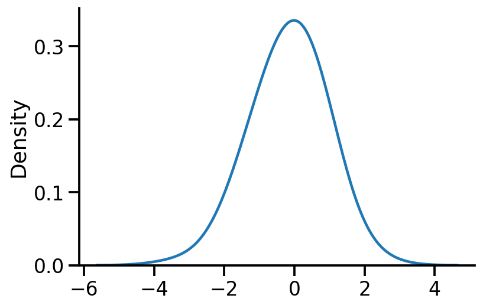

Maximum A-Posteriori (MAP) for parameters of univariate and multivariate normal distribution in PyTorch
Contents
Maximum A-Posteriori (MAP) for parameters of univariate and multivariate normal distribution in PyTorch¶
import torch
import seaborn as sns
import pandas as pd
import matplotlib.pyplot as plt
sns.reset_defaults()
sns.set_context(context="talk", font_scale=1)
%matplotlib inline
%config InlineBackend.figure_format='retina'
dist = torch.distributions
Creating a 1d normal distribution¶
uv_normal = dist.Normal(loc=0.0, scale=1.0)
Sampling from the distribution¶
samples = uv_normal.sample(sample_shape=[100])
sns.kdeplot(samples, bw_adjust=2)
sns.despine()

Defining the prior¶
prior_mu = torch.tensor(5.0, requires_grad=True)
prior = dist.Normal(loc=prior_mu, scale=1.0)
prior
Normal(loc: 5.0, scale: 1.0)
Computing logprob of prior for a mu¶
def logprob_prior(mu):
return -prior.log_prob(mu)
Computing logprob of observing data given a mu¶
stdev_likelihood = 1.0
def log_likelihood(mu, samples):
to_learn = torch.distributions.Normal(loc=mu, scale=stdev_likelihood)
return -torch.sum(to_learn.log_prob(samples))
mu = torch.tensor(-2.0, requires_grad=True)
log_likelihood(mu, samples), logprob_prior(mu)
log_likelihood(mu, samples).item()
305.98101806640625
out = {"Logprob_Prior": {}, "LogLikelihood": {}}
for mu_s in torch.linspace(-10, 10, 100):
t = mu_s.item()
mu = torch.tensor(mu_s)
out["Logprob_Prior"][t] = logprob_prior(mu).item()
out["LogLikelihood"][t] = log_likelihood(mu, samples).item()
/var/folders/1x/wmgn24mn1bbd2vgbqlk98tbc0000gn/T/ipykernel_73152/3102909564.py:4: UserWarning: To copy construct from a tensor, it is recommended to use sourceTensor.clone().detach() or sourceTensor.clone().detach().requires_grad_(True), rather than torch.tensor(sourceTensor).
mu = torch.tensor(mu_s)
pd.DataFrame(out).plot(subplots=True)
array([<AxesSubplot:>, <AxesSubplot:>], dtype=object)
def loss(mu):
return log_likelihood(mu, samples) + logprob_prior(mu)
mu = torch.tensor(2.0, requires_grad=True)
opt = torch.optim.Adam([mu], lr=0.01)
for i in range(1500):
loss_val = loss(mu)
loss_val.backward()
if i % 100 == 0:
print(f"Iteration: {i}, Loss: {loss_val.item():0.2f}, Loc: {mu.item():0.6f}")
opt.step()
opt.zero_grad()
Iteration: 0, Loss: 374.37, Loc: 2.000000
Iteration: 100, Loss: 222.93, Loc: 1.092788
Iteration: 200, Loss: 166.98, Loc: 0.468122
Iteration: 300, Loss: 152.88, Loc: 0.119012
Iteration: 400, Loss: 150.57, Loc: -0.034995
Iteration: 500, Loss: 150.33, Loc: -0.088207
Iteration: 600, Loss: 150.31, Loc: -0.102667
Iteration: 700, Loss: 150.31, Loc: -0.105761
Iteration: 800, Loss: 150.31, Loc: -0.106279
Iteration: 900, Loss: 150.31, Loc: -0.106346
Iteration: 1000, Loss: 150.31, Loc: -0.106352
Iteration: 1100, Loss: 150.31, Loc: -0.106353
Iteration: 1200, Loss: 150.31, Loc: -0.106353
Iteration: 1300, Loss: 150.31, Loc: -0.106353
Iteration: 1400, Loss: 150.31, Loc: -0.106353
Analytical MAP estimate of location¶
\(\hat{\theta}_{MAP}=\dfrac{n}{n+\sigma^{2}} \bar{x}+\dfrac{\sigma^{2}}{n+\sigma^{2}} \mu\)
prior_mu
tensor(5., requires_grad=True)
n = samples.shape[0]
sample_mean = samples.mean()
n_plus_variance = n + stdev_likelihood**2
loc_map = ((n * sample_mean) / n_plus_variance) + (
(stdev_likelihood**2) / (n_plus_variance)
) * prior_mu
loc_map.item()
-0.1063527911901474
torch.allclose(loc_map, mu)
True
Setting 2: Learning location and scale¶
An important difference from the previous code is that we need to use a transformed variable to ensure scale is positive. We do so by using softplus.
mu = torch.tensor(1.0, requires_grad=True)
scale = torch.tensor(2.0, requires_grad=True)
def log_likelihood(mu, scale, samples):
scale_softplus = torch.functional.F.softplus(scale)
to_learn = torch.distributions.Normal(loc=mu, scale=scale_softplus)
return -torch.sum(to_learn.log_prob(samples))
def loss(mu, scale):
return log_likelihood(mu, scale, samples) + logprob_prior(mu)
opt = torch.optim.Adam([mu, scale], lr=0.01)
for i in range(1500):
loss_val = loss(mu, scale)
loss_val.backward()
if i % 100 == 0:
print(
f"Iteration: {i}, Loss: {loss_val.item():0.2f}, Loc: {mu.item():0.3f}, Scale: {torch.functional.F.softplus(scale).item():0.3f}"
)
opt.step()
opt.zero_grad()
Iteration: 0, Loss: 200.89, Loc: 1.000, Scale: 2.127
Iteration: 100, Loss: 158.51, Loc: 0.086, Scale: 1.282
Iteration: 200, Loss: 149.98, Loc: -0.112, Scale: 0.942
Iteration: 300, Loss: 149.98, Loc: -0.112, Scale: 0.943
Iteration: 400, Loss: 149.98, Loc: -0.112, Scale: 0.943
Iteration: 500, Loss: 149.98, Loc: -0.112, Scale: 0.943
Iteration: 600, Loss: 149.98, Loc: -0.112, Scale: 0.943
Iteration: 700, Loss: 149.98, Loc: -0.112, Scale: 0.943
Iteration: 800, Loss: 149.98, Loc: -0.112, Scale: 0.943
Iteration: 900, Loss: 149.98, Loc: -0.112, Scale: 0.943
Iteration: 1000, Loss: 149.98, Loc: -0.112, Scale: 0.943
Iteration: 1100, Loss: 149.98, Loc: -0.112, Scale: 0.943
Iteration: 1200, Loss: 149.98, Loc: -0.112, Scale: 0.943
Iteration: 1300, Loss: 149.98, Loc: -0.112, Scale: 0.943
Iteration: 1400, Loss: 149.98, Loc: -0.112, Scale: 0.943
We can see that our gradient based methods parameters match those of the MLE computed analytically.
mvn = dist.MultivariateNormal(
loc=torch.tensor([1.0, 1.0]),
covariance_matrix=torch.tensor([[2.0, 0.5], [0.5, 0.4]]),
)
mle_mvn_loc = mvn_samples = mvn.sample([1000])
loss
loc = torch.tensor([-1.0, 1.0], requires_grad=True)
tril = torch.autograd.Variable(torch.tril(torch.ones(2, 2)), requires_grad=True)
opt = torch.optim.Adam([loc, tril], lr=0.01)
prior = dist.MultivariateNormal(
loc=torch.tensor([0.0, 0.0]),
covariance_matrix=torch.tensor([[1.0, 0.0], [0.0, 1.0]])
)
def log_likelihood(loc, tril, samples):
cov = tril @ tril.t()
to_learn = torch.distributions.MultivariateNormal(loc=loc, covariance_matrix=cov)
return -torch.sum(to_learn.log_prob(samples))
def logprob_prior(loc):
return -prior.log_prob(loc)
def loss(loc, tril, samples):
return log_likelihood(loc, tril, samples) + logprob_prior(loc)
for i in range(8100):
to_learn = dist.MultivariateNormal(loc=loc, covariance_matrix=tril @ tril.t())
loss_value = loss(loc, tril, mvn_samples)
loss_value.backward()
if i % 500 == 0:
print(f"Iteration: {i}, Loss: {loss_value.item():0.2f}, Loc: {loc}")
opt.step()
opt.zero_grad()
Iteration: 0, Loss: 7663.86, Loc: tensor([-1., 1.], requires_grad=True)
Iteration: 500, Loss: 2540.96, Loc: tensor([0.8229, 0.9577], requires_grad=True)
Iteration: 1000, Loss: 2526.40, Loc: tensor([1.0300, 1.0076], requires_grad=True)
Iteration: 1500, Loss: 2526.40, Loc: tensor([1.0308, 1.0077], requires_grad=True)
Iteration: 2000, Loss: 2526.40, Loc: tensor([1.0308, 1.0077], requires_grad=True)
Iteration: 2500, Loss: 2526.40, Loc: tensor([1.0308, 1.0077], requires_grad=True)
Iteration: 3000, Loss: 2526.40, Loc: tensor([1.0308, 1.0077], requires_grad=True)
Iteration: 3500, Loss: 2526.40, Loc: tensor([1.0308, 1.0077], requires_grad=True)
Iteration: 4000, Loss: 2526.40, Loc: tensor([1.0308, 1.0077], requires_grad=True)
Iteration: 4500, Loss: 2526.40, Loc: tensor([1.0308, 1.0077], requires_grad=True)
Iteration: 5000, Loss: 2526.40, Loc: tensor([1.0308, 1.0077], requires_grad=True)
Iteration: 5500, Loss: 2526.40, Loc: tensor([1.0308, 1.0077], requires_grad=True)
Iteration: 6000, Loss: 2526.40, Loc: tensor([1.0308, 1.0077], requires_grad=True)
Iteration: 6500, Loss: 2526.40, Loc: tensor([1.0308, 1.0077], requires_grad=True)
Iteration: 7000, Loss: 2526.40, Loc: tensor([1.0308, 1.0077], requires_grad=True)
Iteration: 7500, Loss: 2526.40, Loc: tensor([1.0308, 1.0077], requires_grad=True)
Iteration: 8000, Loss: 2526.40, Loc: tensor([1.0308, 1.0077], requires_grad=True)
tril@tril.t(),mvn.covariance_matrix, prior.covariance_matrix
(tensor([[1.9699, 0.4505],
[0.4505, 0.3737]], grad_fn=<MmBackward0>),
tensor([[2.0000, 0.5000],
[0.5000, 0.4000]]),
tensor([[1., 0.],
[0., 1.]]))
Todo
1. Expand on MVN case
2. Clean up code
3. Visualize, prior, likelihood, MLE, MAP
4. Shrinkage estimation (reference Murphy book)
5. Inverse Wishart distribution
References